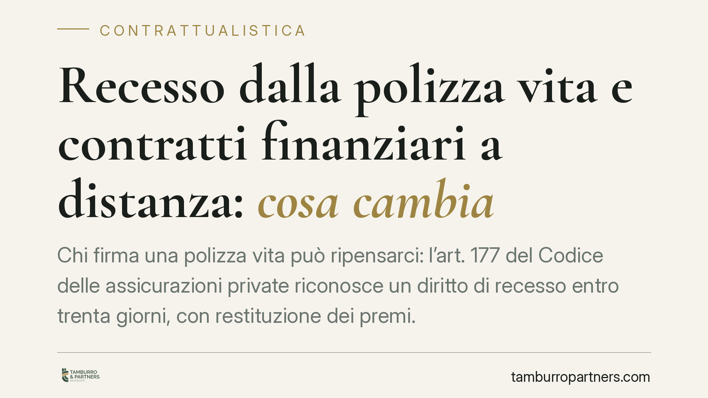

Recesso dalla polizza vita e contratti finanziari a distanza: cosa cambia
Chi firma una polizza vita può ripensarci: l'art. 177 del Codice delle assicurazioni private riconosce un diritto di recesso entro trenta giorni, con restituzione dei premi. Parallelamente, il recepimento della normativa europea sui contratti finanziari a distanza introduce nuovi obblighi informativi e il divieto di pratiche manipolative. Due piani distinti, spesso confusi, che conviene tenere separati.

Il caso: ho firmato una polizza vita, posso tornare indietro?
La domanda ricorre spesso. La risposta, per i contratti di assicurazione sulla vita, è affermativa e si fonda su una norma specifica: l'art. 177 del Codice delle assicurazioni private (D.lgs. 7 settembre 2005, n. 209, di seguito "CAP").
Si tratta di un diritto autonomo, che non richiede giustificazione e non comporta penalità contrattuali. Va però esercitato nel termine e con le forme previste dalla legge.
Inquadramento normativo: l'art. 177 CAP
L'art. 177, comma 1, CAP riconosce al contraente la facoltà di recedere dal contratto di assicurazione sulla vita entro trenta giorni dal momento in cui è informato della conclusione del contratto. Il recesso si esercita con comunicazione all'impresa.
Sul piano degli effetti, il comma 1 stabilisce che l'impresa è liberata dall'obbligazione dalle ore 24 del giorno di ricezione della comunicazione di recesso. È un dettaglio pratico da non sottovalutare: ciò che rileva non è il giorno in cui il contraente spedisce la comunicazione, ma quello in cui l'impresa la riceve. Per questo è opportuno utilizzare un canale che consenta di provare la data di ricezione (posta elettronica certificata o raccomandata A/R).
Quanto alla restituzione, l'art. 177, comma 2, CAP prevede che, entro trenta giorni dalla ricezione della comunicazione di recesso, l'impresa rimborsa al contraente il premio da questi eventualmente corrisposto, al netto della parte relativa al periodo per il quale il contratto ha avuto effetto e delle spese effettivamente sostenute per l'emissione, se previste nel contratto e quantificate nella proposta o nella polizza.
> *Nota di verifica. Il testo dell'art. 177 CAP è stato interessato dalle modifiche introdotte dal D.lgs. 21 maggio 2018, n. 68. La formulazione riportata va riscontrata con la versione vigente del CAP prima di assumere decisioni operative.*
Un piano diverso: i contratti finanziari a distanza
Occorre non confondere il recesso dalla polizza vita (art. 177 CAP) con la disciplina dei contratti di servizi finanziari conclusi a distanza.
Quest'ultima deriva dalla Direttiva (UE) 2023/2673, che modifica la disciplina europea in materia di contratti a distanza di servizi finanziari ai consumatori. Il recepimento italiano interviene, sul piano interno, principalmente sugli artt. 67-bis e seguenti del Codice del Consumo (D.lgs. 6 settembre 2005, n. 206), dedicati ai contratti a distanza aventi ad oggetto servizi finanziari.
> *Nota di verifica. Gli estremi esatti del decreto di recepimento (numero, anno, data di entrata in vigore) e le relative soglie sanzionatorie vanno riscontrati sulla Gazzetta Ufficiale prima di qualsiasi citazione puntuale. La sintesi da cui muove questo contributo indica una decorrenza differita al 2026: il dato è da confermare.*
Le principali linee di intervento della nuova disciplina europea sono tre.
Obblighi informativi rafforzati. Prima della conclusione del contratto a distanza, il consumatore deve ricevere in modo chiaro e comprensibile le informazioni precontrattuali (caratteristiche del servizio, costi, diritto di recesso). È previsto un obbligo di evidenziare in modo prominente gli elementi essenziali.
Divieto di dark pattern. Sono vietate le interfacce che orientano la scelta del consumatore con tecniche manipolative. Esempio concreto: un sito che, nel percorso di acquisto, rende il pulsante di adesione grande e colorato e nasconde in fondo alla pagina, in caratteri minuti, il link per non attivare un servizio accessorio a pagamento. Si tratta di architetture della scelta che forzano la decisione, ora espressamente censurate.
Recesso semplificato. La direttiva introduce strumenti che agevolano l'esercizio del recesso a distanza, come una apposita funzione di recesso facilmente accessibile.
Perché la distinzione conta
I due regimi rispondono a logiche diverse. L'art. 177 CAP tutela il contraente di una specifica tipologia di prodotto (la polizza vita) a prescindere dal canale di vendita. La disciplina dei contratti finanziari a distanza tutela il consumatore in ragione della modalità di conclusione del contratto (senza presenza fisica simultanea).
Quando una polizza vita viene sottoscritta online, i due piani possono sovrapporsi. In questi casi è necessario verificare quale termine e quale procedura prevalgano, evitando di dare per scontata l'applicazione di un solo regime.
Cosa fare in concreto
Per il consumatore:
- Annotare la data in cui si è stati informati della conclusione del contratto: da lì decorrono i trenta giorni.
- È opportuno leggere la sezione del contratto dedicata a spese di emissione e modalità di recesso prima di firmare.
- Inviare il recesso con un canale che provi la data di ricezione (PEC o raccomandata A/R), ricordando che gli effetti decorrono dalla ricezione da parte dell'impresa.
- Conservare la ricevuta e sollecitare il rimborso se decorre il termine di trenta giorni dalla ricezione.
Per imprese e intermediari:
- Rivedere la modulistica precontrattuale alla luce dei nuovi obblighi informativi.
- Verificare che i percorsi di vendita online non integrino dark pattern vietati.
- Predisporre una funzione di recesso accessibile per i contratti a distanza.
Disclaimer
Contributo informativo a cura di Tamburro & Partners - Avv. Giuseppe Tamburro. Non costituisce parere legale.
Ogni contratto ha il suo equilibrio.
Se vuoi una revisione delle clausole o una redazione su misura, scrivi allo studio. Ti rispondiamo entro un giorno lavorativo.